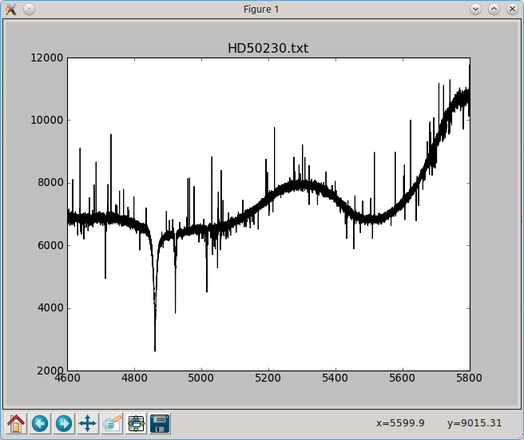
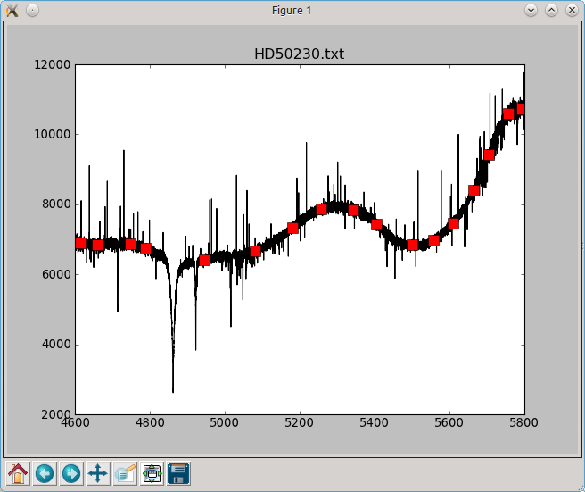
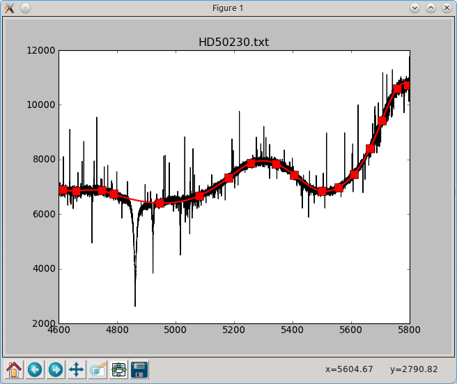
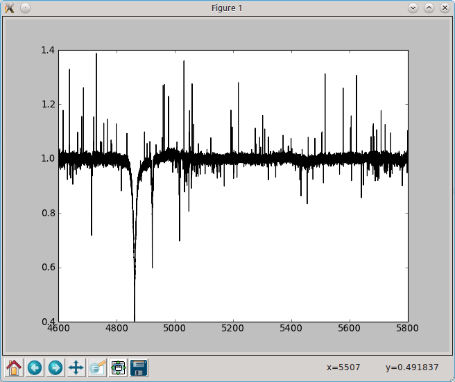

{kind=link}
{kind=link}
{kind=link}
{kind=link}

The following script uses the matplotlib widget to normalise a spectrum using a spline fit on user-defined points.
When saved to file specnorm.py, the user can invoke the script via the terminal with the command:
$:> python specnorm.py HD50230.txt
or any other text file containing two columns (wavelength, flux). You can download the example file here.
When started, you get a window like this:
A user can left/right-click to select/deselect continuum points:
Hitting enter fits the splines throught the continuum points:
Hitting n normalises the spectrum:
The user can write the result to a file with w and reset to the original spectrum with r.
import pylab as plt
import numpy as np
from scipy.interpolate import splrep,splev
import sys
import os
def onclick(event):
# when none of the toolbar buttons is activated and the user clicks in the
# plot somewhere, compute the median value of the spectrum in a 10angstrom
# window around the x-coordinate of the clicked point. The y coordinate
# of the clicked point is not important. Make sure the continuum points
# `feel` it when it gets clicked, set the `feel-radius` (picker) to 5 points
toolbar = plt.get_current_fig_manager().toolbar
if event.button==1 and toolbar.mode=='':
window = ((event.xdata-5)<=wave) & (wave<=(event.xdata+5))
y = np.median(flux[window])
plt.plot(event.xdata,y,'rs',ms=10,picker=5,label='cont_pnt')
plt.draw()
def onpick(event):
# when the user clicks right on a continuum point, remove it
if event.mouseevent.button==3:
if hasattr(event.artist,'get_label') and event.artist.get_label()=='cont_pnt':
event.artist.remove()
def ontype(event):
# when the user hits enter:
# 1. Cycle through the artists in the current axes. If it is a continuum
# point, remember its coordinates. If it is the fitted continuum from the
# previous step, remove it
# 2. sort the continuum-point-array according to the x-values
# 3. fit a spline and evaluate it in the wavelength points
# 4. plot the continuum
if event.key=='enter':
cont_pnt_coord = []
for artist in plt.gca().get_children():
if hasattr(artist,'get_label') and artist.get_label()=='cont_pnt':
cont_pnt_coord.append(artist.get_data())
elif hasattr(artist,'get_label') and artist.get_label()=='continuum':
artist.remove()
cont_pnt_coord = np.array(cont_pnt_coord)[...,0]
sort_array = np.argsort(cont_pnt_coord[:,0])
x,y = cont_pnt_coord[sort_array].T
spline = splrep(x,y,k=3)
continuum = splev(wave,spline)
plt.plot(wave,continuum,'r-',lw=2,label='continuum')
# when the user hits 'n' and a spline-continuum is fitted, normalise the
# spectrum
elif event.key=='n':
continuum = None
for artist in plt.gca().get_children():
if hasattr(artist,'get_label') and artist.get_label()=='continuum':
continuum = artist.get_data()[1]
break
if continuum is not None:
plt.cla()
plt.plot(wave,flux/continuum,'k-',label='normalised')
# when the user hits 'r': clear the axes and plot the original spectrum
elif event.key=='r':
plt.cla()
plt.plot(wave,flux,'k-')
# when the user hits 'w': if the normalised spectrum exists, write it to a
# file.
elif event.key=='w':
for artist in plt.gca().get_children():
if hasattr(artist,'get_label') and artist.get_label()=='normalised':
data = np.array(artist.get_data())
np.savetxt(os.path.splitext(filename)[0]+'.nspec',data.T)
print('Saved to file')
break
plt.draw()
if __name__ == "__main__":
# Get the filename of the spectrum from the command line, and plot it
filename = sys.argv[1]
wave,flux = np.loadtxt(filename).T
spectrum, = plt.plot(wave,flux,'k-',label='spectrum')
plt.title(filename)
# Connect the different functions to the different events
plt.gcf().canvas.mpl_connect('key_press_event',ontype)
plt.gcf().canvas.mpl_connect('button_press_event',onclick)
plt.gcf().canvas.mpl_connect('pick_event',onpick)
plt.show() # show the window